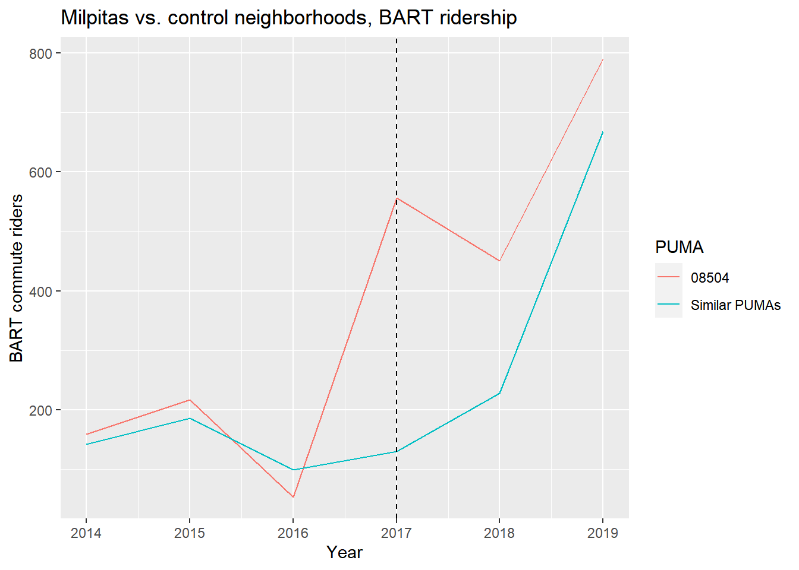

7.2 Building emissions
We have already introduced energy data in Chapter 1 and parcel data in Section 6.2. In the absence of direct building-level energy data, aggregated energy data can still be used to estimate GHG emissions from building energy use for large regions, and can be combined with aggregated parcel data to gain insights about energy efficiency.
Let’s start by reading 2019 PG&E electricity and gas data. We can use the same technique as we used in Section 1.6, but this time make use of an additional nested for loop to loop through both “Electric” and “Gas” files from the PG&E site. We need to deal with differences in the field names of each kind of CSV, where electricity data is provided as TOTALKWH (kilowatt-hours) while gas data is provided as TOTALTHM (therms). To deal with these different units, and since we ultimately want to get to GHG emissions in units of metric tonnes of carbon equivalent, we can convert both fields to TOTALTCO2E within the loop before binding the different quarterly files together.
Converting from electricity or gas units to CO2 equivalent depends on some knowledge of the actual technological operations involved. Starting with electricity, which can have highly variable emissions depending on the generation sources, we can use PG&E’s voluntary emissions reporting which can be viewed at their Corporate Sustainability page under “Benchmarking Greenhouse Gas Emissions for Delivered Electricity”. Plotting the table information yields the following:
pge_elec_emissions_factor <-
data.frame(
year = c(2013:2018),
factor = c(427,435,405,294,210,206)
)
pge_elec_emissions_factor %>%
ggplot() +
geom_line(
aes(
x = year,
y = factor
)
) +
labs(
x = "Year",
y = "Pounds of CO2 per MHh",
title = "PG&E electricity emissions rate"
)
To work with 2019 PG&E data, we could assume that the emissions factor has continued to steadily decline in 2019 at the same pace as it declined between 2017 and 2018, which was not much. With these factors, we can convert kWh to MWh to pounds of CO2, and from there, to metric tonnes (1 pound = 0.000453592 metric tonnes, according to Google).
Keep in mind that in the Bay Area, many community choice aggregators, such as CleanPowerSF in San Francisco, provide an alternative electricity generation option for consumers with increased renewable energy content, potentially up to zero carbon emissions (PG&E is still responsible for delivery through its wires and infrastructure). This demonstration will assume that the PG&E data shows full electricity consumption including CCA-generated electricity, and accounts for that portion of electricity usage having a lower carbon footprint.
For natural gas, since the composition of PG&E’s natural gas does not change significantly over time, we’ll use just one emissions factor from the U.S. Energy Information Administration, which is 117 pounds of CO2 per million BTU. So we can convert therms to MBTUs to pounds of CO2, and from there, to metric tonnes; the conversion ends up being 0.00531 metric tonnes per therm.
One last note before we process the PG&E data: it turns out that there is an error in 2017 Q4 data downloaded from the website, where Q4 accidentally includes September 2017, which should only be part of Q3. This is the kind of data issue that one should always be on the lookout for when working with new datasets. We’ll remove that double-counted September 2017 data manually.
pge_elec_emissions_factor <-
data.frame(
year = c(2013:2019),
factor = c(427,435,405,294,210,206, 204)
)
pge_data <-
2013:2019 %>%
map_dfr(function(yr){
factor <-
pge_elec_emissions_factor %>%
filter(year == yr) %>%
pull(factor)
1:4 %>%
map_dfr(function(quarter){
c("Electric","Gas") %>%
map_dfr(function(type){
filename <-
paste0(
"pge/PGE_",
yr,
"_Q",
quarter,
"_",
type,
"UsageByZip.csv"
)
print(filename)
temp <- read_csv(filename)
if(yr == 2017 & quarter == 4) {
temp <-
temp %>%
filter(MONTH != 9)
}
temp <-
temp %>%
rename_all(toupper) %>%
mutate(
TOTALKBTU = ifelse(
substr(CUSTOMERCLASS,1,1) == "E",
TOTALKWH * 3.412,
TOTALTHM * 99.976
),
TOTALTCO2E = ifelse(
substr(CUSTOMERCLASS,1,1) == "E",
TOTALKWH/1000 * factor * 0.000453592,
TOTALTHM * 0.00531
)
) %>%
select(
ZIPCODE,
YEAR,
MONTH,
CUSTOMERCLASS,
TOTALKBTU,
TOTALTCO2E,
TOTALCUSTOMERS
)
})
})
})## [1] "pge/PGE_2013_Q1_ElectricUsageByZip.csv"
## [1] "pge/PGE_2013_Q1_GasUsageByZip.csv"
## [1] "pge/PGE_2013_Q2_ElectricUsageByZip.csv"
## [1] "pge/PGE_2013_Q2_GasUsageByZip.csv"
## [1] "pge/PGE_2013_Q3_ElectricUsageByZip.csv"
## [1] "pge/PGE_2013_Q3_GasUsageByZip.csv"
## [1] "pge/PGE_2013_Q4_ElectricUsageByZip.csv"
## [1] "pge/PGE_2013_Q4_GasUsageByZip.csv"
## [1] "pge/PGE_2014_Q1_ElectricUsageByZip.csv"
## [1] "pge/PGE_2014_Q1_GasUsageByZip.csv"
## [1] "pge/PGE_2014_Q2_ElectricUsageByZip.csv"
## [1] "pge/PGE_2014_Q2_GasUsageByZip.csv"
## [1] "pge/PGE_2014_Q3_ElectricUsageByZip.csv"
## [1] "pge/PGE_2014_Q3_GasUsageByZip.csv"
## [1] "pge/PGE_2014_Q4_ElectricUsageByZip.csv"
## [1] "pge/PGE_2014_Q4_GasUsageByZip.csv"
## [1] "pge/PGE_2015_Q1_ElectricUsageByZip.csv"
## [1] "pge/PGE_2015_Q1_GasUsageByZip.csv"
## [1] "pge/PGE_2015_Q2_ElectricUsageByZip.csv"
## [1] "pge/PGE_2015_Q2_GasUsageByZip.csv"
## [1] "pge/PGE_2015_Q3_ElectricUsageByZip.csv"
## [1] "pge/PGE_2015_Q3_GasUsageByZip.csv"
## [1] "pge/PGE_2015_Q4_ElectricUsageByZip.csv"
## [1] "pge/PGE_2015_Q4_GasUsageByZip.csv"
## [1] "pge/PGE_2016_Q1_ElectricUsageByZip.csv"
## [1] "pge/PGE_2016_Q1_GasUsageByZip.csv"
## [1] "pge/PGE_2016_Q2_ElectricUsageByZip.csv"
## [1] "pge/PGE_2016_Q2_GasUsageByZip.csv"
## [1] "pge/PGE_2016_Q3_ElectricUsageByZip.csv"
## [1] "pge/PGE_2016_Q3_GasUsageByZip.csv"
## [1] "pge/PGE_2016_Q4_ElectricUsageByZip.csv"
## [1] "pge/PGE_2016_Q4_GasUsageByZip.csv"
## [1] "pge/PGE_2017_Q1_ElectricUsageByZip.csv"
## [1] "pge/PGE_2017_Q1_GasUsageByZip.csv"
## [1] "pge/PGE_2017_Q2_ElectricUsageByZip.csv"
## [1] "pge/PGE_2017_Q2_GasUsageByZip.csv"
## [1] "pge/PGE_2017_Q3_ElectricUsageByZip.csv"
## [1] "pge/PGE_2017_Q3_GasUsageByZip.csv"
## [1] "pge/PGE_2017_Q4_ElectricUsageByZip.csv"
## [1] "pge/PGE_2017_Q4_GasUsageByZip.csv"
## [1] "pge/PGE_2018_Q1_ElectricUsageByZip.csv"
## [1] "pge/PGE_2018_Q1_GasUsageByZip.csv"
## [1] "pge/PGE_2018_Q2_ElectricUsageByZip.csv"
## [1] "pge/PGE_2018_Q2_GasUsageByZip.csv"
## [1] "pge/PGE_2018_Q3_ElectricUsageByZip.csv"
## [1] "pge/PGE_2018_Q3_GasUsageByZip.csv"
## [1] "pge/PGE_2018_Q4_ElectricUsageByZip.csv"
## [1] "pge/PGE_2018_Q4_GasUsageByZip.csv"
## [1] "pge/PGE_2019_Q1_ElectricUsageByZip.csv"
## [1] "pge/PGE_2019_Q1_GasUsageByZip.csv"
## [1] "pge/PGE_2019_Q2_ElectricUsageByZip.csv"
## [1] "pge/PGE_2019_Q2_GasUsageByZip.csv"
## [1] "pge/PGE_2019_Q3_ElectricUsageByZip.csv"
## [1] "pge/PGE_2019_Q3_GasUsageByZip.csv"
## [1] "pge/PGE_2019_Q4_ElectricUsageByZip.csv"
## [1] "pge/PGE_2019_Q4_GasUsageByZip.csv"Now, let’s filter to just ZIP codes in San Francisco, filter to just residential and commercial electricity (given that industrial sources will tend to be masked in the public PG&E data due to the CPUC 15-15 rule) and plot the change in KBTU and TCO2E over the years.
us_zips <-
zctas(cb = T, progress_bar = F)
sf_zips <-
us_zips %>%
st_centroid() %>%
.[counties("CA", cb = T, progress_bar = F) %>% filter(NAME == "San Francisco"), ] %>%
st_set_geometry(NULL) %>%
left_join(us_zips %>% select(GEOID10)) %>%
st_as_sf()sf_pge_data <-
pge_data %>%
filter(ZIPCODE %in% sf_zips$ZCTA5CE10) %>%
filter(CUSTOMERCLASS %in% c(
"Elec- Commercial",
"Elec- Residential",
"Gas- Commercial",
"Gas- Residential"
)) %>%
mutate(
ENERGYTYPE = substr(CUSTOMERCLASS,1,1)
) %>%
group_by(ZIPCODE, ENERGYTYPE, YEAR) %>%
summarize(
TOTALKBTU = sum(TOTALKBTU, na.rm=T),
TOTALTCO2E = sum(TOTALTCO2E, na.rm=T),
TOTALCUSTOMERS = mean(TOTALCUSTOMERS, na.rm=T)
) %>%
group_by(ENERGYTYPE, YEAR) %>%
summarize_at(
vars(TOTALKBTU,TOTALTCO2E,TOTALCUSTOMERS),
sum,
na.rm=T
) %>%
ungroup()
ggplot(
sf_pge_data,
aes(
x = as.factor(YEAR),
y = TOTALKBTU/1000000
)
) +
geom_bar(stat = "identity", aes(fill = ENERGYTYPE), position = "dodge") +
labs(x = "Year", y = "GBTU", title = "SF Annual Energy Usage, 2013 to 2019") +
scale_fill_discrete(name="Energy Type",labels = c("Electricity","Gas"))
ggplot(
sf_pge_data,
aes(
x = as.factor(YEAR),
y = TOTALTCO2E
)
) +
geom_bar(stat = "identity", aes(fill = ENERGYTYPE), position = "dodge") +
labs(x = "Year", y = "tCO2e", title = "SF Annual Energy Usage, 2013 to 2019") +
scale_fill_discrete(name="Energy Type",labels = c("Electricity","Gas"))
The sharp divergence in carbon footprint between gas and electricity use, given the increasing renewable content in electricity generation, is a key reason why cities are pushing for building electrification as a key GHG mitigation approach.